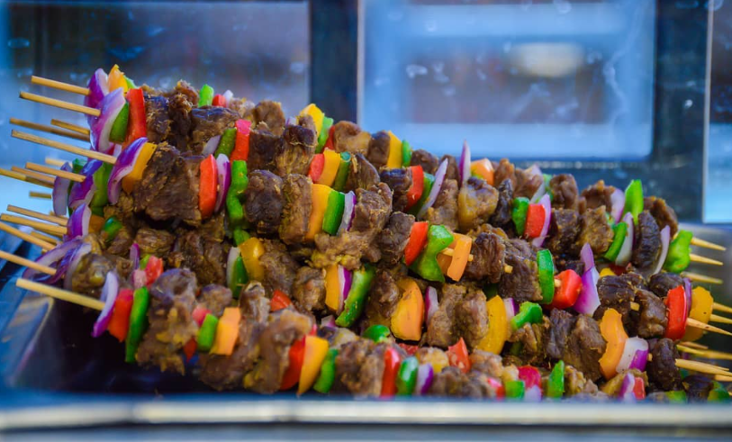
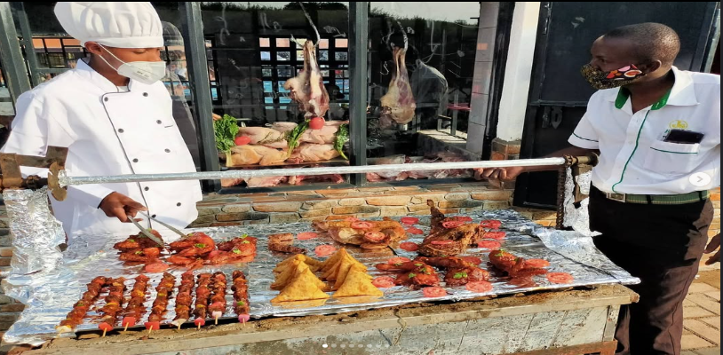
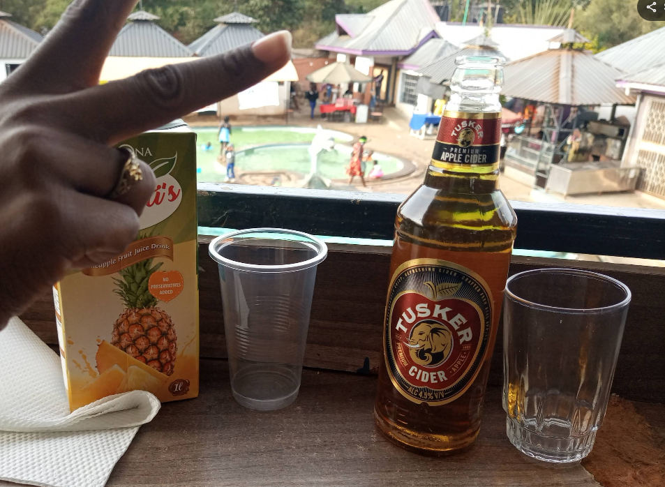

Dining
Long lunches under the trees.
Fresh plates, easy pacing and drinks as the light turns gold.

The table
Food made for lingering.
Order slowly, share generously and settle in. Meals are served from 08:00 to 18:00 every day, in the shade or in the sun.
From the kitchen

01Long lunches↗
02Chef-led dining↗
03Drinks & sunset↗